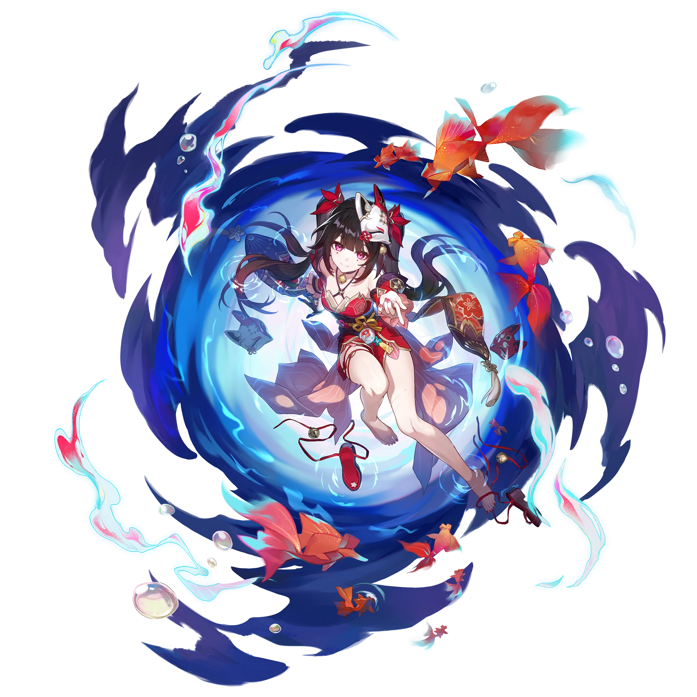

Descripcion del personaje
Sparkle es un personaje jugable de Honkai: Star Rail, miembro del grupo conocido como los Masked Fools. Es un maestro en el arte del teatro, con una personalidad enigmática y llena de intriga. Sparkle destaca por su capacidad para adoptar diferentes máscaras y asumir innumerables roles, reflejando su versatilidad tanto en combate como en su historia.
Sparkle proviene de una cultura donde el arte dramático y las actuaciones teatrales tienen un papel central. En su vida, la línea entre la realidad y la ficción se desdibuja constantemente, ya que ve el mundo como un escenario en el que debe interpretar varios papeles. A través de sus múltiples identidades, Sparkle logra confundir tanto a sus enemigos como a sus aliados, lo que le permite mantenerse un paso adelante en situaciones de conflicto.
Si bien su verdadero origen y naturaleza siguen siendo objeto de especulación, su papel dentro de los Masked Fools sugiere que tiene una agenda oculta y que sus actos de apoyo podrían tener motivaciones más profundas que aún no se han revelado por completo
Introduccion al personaje
En combate, Sparkle adopta el Path of Harmony, lo que le otorga habilidades enfocadas en apoyar a sus compañeros de equipo. Utiliza el elemento Quantum y se especializa en proporcionar mejoras que incrementan el rendimiento de sus aliados, como el aumento del daño crítico y la aceleración de sus acciones mediante la gestión de puntos de habilidad. Este personaje es particularmente útil en situaciones donde es esencial que el equipo mantenga un flujo constante de acciones y habilidades para maximizar el daño y la eficiencia.
Calidad del personaje

VIA del personaje
Armonia

Estadisticas del personaje
- PV: 1087
- ATQ: 660
- DEF: 485
- VEL: 104
- Provocacion: 100